Пошук Споминів
Спомини - вони ж аміті.
Окрема активність в Orna за виконання якої ви отримаєте рандомний спомин та певну винагороду в орнах, золоті та ресурсах.
Поїхали
Для того щоб почати пошук споминів вам треба виконати певні дії:
- Побудувати Храм Оракулів 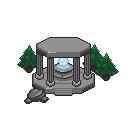 для змоги користуватись гільдією.
- Один раз на день в ній можна отримати Невиразний мнемогліф (Diluted Mnemonic) 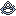.
- При використанні мнемогліфа на мапі з’являться “міні ігри” 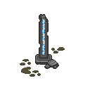 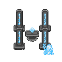 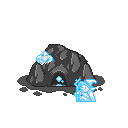 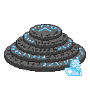 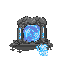 , котрі вам треба зробити.
- Після вдалого завершення гри ви отримаєте винагороду у вигляді золота, орн та ресурсів
- Після завершення 4х ігор на мапі з’являться галявини з відьмами 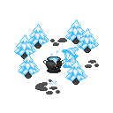.
Несемось
Розберемо механіку відьом і як отримувати аміті як у ваших товаришів :
- Після завершення 4х міні ігор ви бачите 4 галявини з відьмами (можливо менше, залежно від вашої дистанції огляду).
- У кожної відьми своє питання і до нього набір з 4х - 5ти відповідей, при відповіді на які ви отримуєте різні аміті.
- Кожне питання\відповідь під собою мають однакову аміті в поточній годині реального часу. Якість же аміті - рандомна. Тому вибираючи одні й ті ж самі питання\відповідь протягом години ви можете отримати як звичайну, так і орнатну аміті. Погодинна фіксація діє тиждень (з понеділка до неділі), потім цикл аміті оновлюється.
- Кожна аміті має свої властивості як гарні, так і погані. Чим вища якість аміті, тим більше позитивних і негативних властивостей в неї є. Тому варто шукати аміті, в котрих ви отримуєте потрібні позитивні якості і мінімальні негативні.
- Крім цього самі показники позитивних і негативних якостей можуть відрізнятись.
Наприклад, можна отримати звичайну аміті з 10% бонуса до кріта, а можна отримати, в інший час\день, аміті такої ж якості з 40% до кріта.
- Для того щоб “поділитись” аміті з друзями вам одразу треба робити пошук аміті в групі. Не важливо хто був в групі на час пошуку, важливо щоб голова групи не змінювався і не розбивав паті.
Механіка працює так, що кожну годину в групі фіксується аміті для певних комбінацій питання\відповідь. І кожен день будь яка людина, котра долучилась до групи може в туж саму годину отримати цю аматі давши відповідь на ті ж самі питання\відповідь. Якщо гравці різних тирів, то аміті вони будуть отримувати різні навіть в одну й ту саму годину.
- Якщо голова групи зміниться або розіб’є группу, то аміті зміняться і доведеться шукати знову.
- Протягом тижня (не забуваємо, що кожен тиждень аміті оновлюються) ви можете запрошувати до своєї групи людей і вони, в себе вдома (в портал стрибати не треба), будуть ті ж аміті виконуючи їх в ту ж годину.
Приїхали
- Крім аміті, за кожну міні гру, ми отримуємо Відзнаку споминів (Proof of Remembrance) . Це валюта гільдії, за яку ви можете купувати товари в гільдії Оракулів (ресурси, спрайти, статуї, тваринок і тд).
- Непотрібні вам аміті можна обміняти в гільдії на Невиразні Мнемогліфи. 3 аміті на 1 мнемогліф.
- В самій гільдії можна купувати аміті за Відзнаки споминів. Асортимент оновлюється рандомними аміті по стандартній схемі, як і звичайні магазини.
Що варто знати
- Є аміті, котрі підвищують винагороду за виконання міні ігор і фінальну після відьми. 50% - 100%
- Специалізація Оракул (Oracle) 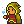 дає змогу одягати 2 аміті, тому з нею можна отримати 200% буст до нагороди.
- В Храмі Оракулів продаються тваринки, які дають буст до винагороди :
T7 Вогник Елізії (Elysian Memories) +20%
T10 Великий вогник Елізії (Great Elysian Memories) +20%
- В Гільдії Мандрівників можна придбати тваринок :
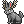 T2 Кролень (Wolpertinger) +5%
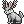 T4 Дужий кролень (Travelled Wolpertinger) +5%
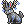 T7 Вмілий кролень (Experienced Wolpertinger) +5%
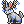 T10 Мудрий кролень (Worldly Wolpertinger) +5%
- Зброя з івентового босса Змій Горинич, Син гір (Gorynych, Son of Mountains) також дає бонус до винагороди :
T10 Лук випробувань (Trialing Bow) +10%
T10 Посох випробувань (Trialing Staff) +10%
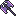 T10 Сокира випробувань (Trialing Axe) +10%
Перелік бонусів аміті

Amities List
Список всіх властивостей Споминів (ENG)
Канали в дискорді
Orna Legends
Англомовний фанатський канал дискорд Orna Legends
Orna Legends Amity
Гілка шукачів Споминів